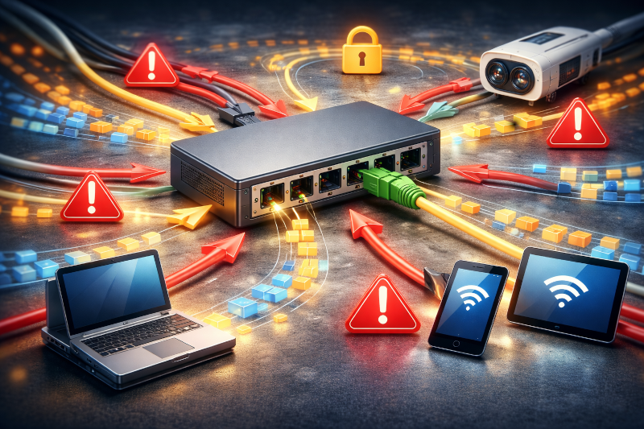
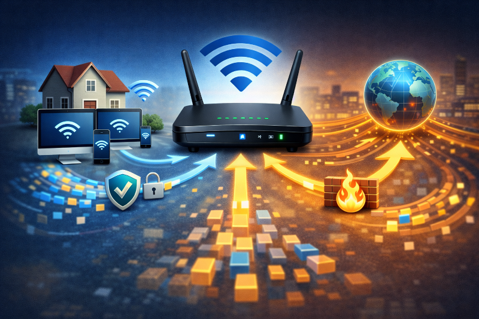
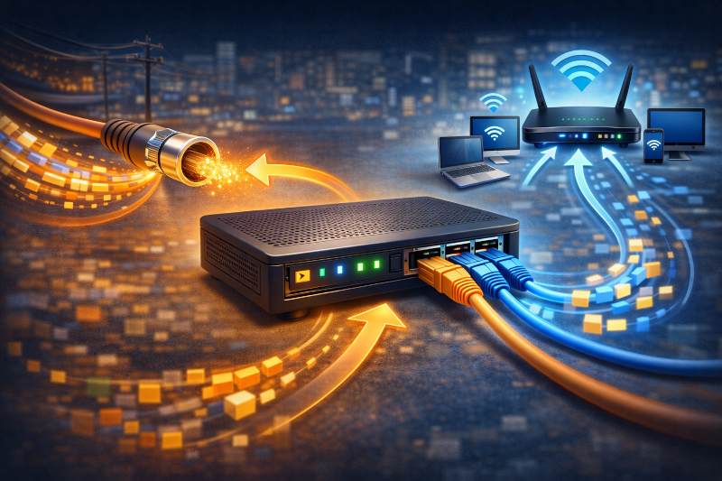
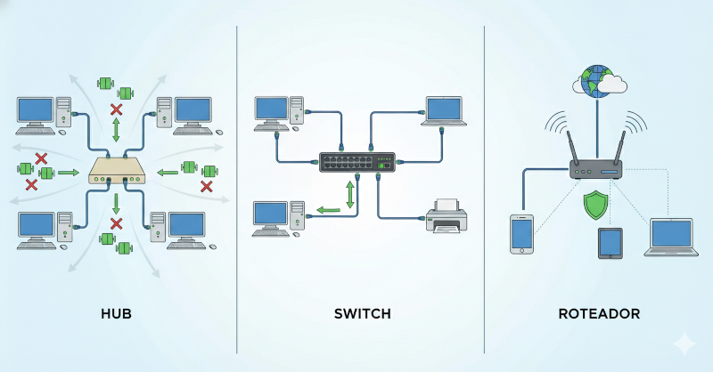

Os Dispositivos de rede são equipamentos responsáveis por interligar computadores, celulares,
impressoras e outros dispositivos, permitindo que eles troquem dados e se comuniquem entre si.
Eles funcionam como os “organizadores do tráfego de dados” dentro de uma rede.
🧩 Para que serve ?
Conectar dispositivos entre si
Controlar o envio e recebimento de dados
Permitir acesso à internet
Garantir comunicação correta e segura
🧩 Exemplos de dispositivos de rede
Roteador ou ONT– distribui a internet
Switch – conecta vários dispositivos em uma rede local
Access Point dispinivel nos ONT e roteadores– fornece acesso Wi-Fi

Hub
O hub é um dispositivo de rede simples, muito utilizado no início das redes de
computadores.
⚙️ Como ele funciona?
O hub recebe os dados de um dispositivo e envia essas informações para todas as portas, sem
saber qual é o destino correto.
❌ Desvantagens do Hub
❌ Envia dados para todas as portas, causando tráfego desnecessário
❌ Pouco seguro, pois todos os dispositivos recebem os dados
❌ Baixo desempenho, com muitas colisões de dados
❌ Quase não utilizado hoje, pois foi substituído por dispositivos mais inteligentes
🔄 Por que caiu em desuso?
Atualmente, o switch faz a mesma função de forma muito mais eficiente, enviando os dados apenas
para o dispositivo correto.

Switch
O switch é um dispositivo de rede inteligente, muito usado em redes locais (LAN) como casas,
escolas e empresas.
⚙️ Como ele funciona?
Diferente do hub, o switch identifica o endereço MAC de cada dispositivo conectado.
Assim, quando recebe um dado, ele envia apenas para a porta do dispositivo de destino correto,
evitando tráfego desnecessário.
✅ Vantagens do Switch
✔ Envia dados somente para o destino correto
✔ Mais rápido, pois reduz colisões de dados
✔ Mais seguro, já que outros dispositivos não recebem informações que não são para eles
✔ Muito usado em redes locais modernas
🏢 Onde é utilizado?
Redes domésticas
Laboratórios de informática
Empresas e escolas
Roteador
O roteador é o dispositivo de rede responsável por interligar redes diferentes, permitindo que
elas se comuniquem entre si.
🌐 Como ele funciona?
O roteador recebe os dados de uma rede e decide o melhor caminho para enviá-los até outra rede.
No uso doméstico, ele conecta a rede local da casa à Internet.
🏠 Exemplo prático
✔ Dispositivos da casa (computador, celular, TV) → rede local
✔ Roteador → conecta essa rede à Internet
🔐 Funções importantes do roteador
Distribuir internet para vários dispositivos
Criar rede Wi-Fi
Controlar e proteger a rede (firewall, senha)
Gerenciar endereços IP (DHCP)

Modem
O modem é o dispositivo responsável por fazer a comunicação entre o provedor de internet e a sua
rede local.
🔄 Função principal
O nome modem vem de Modulador/Demodulador.
Ele converte o sinal que vem do provedor para um formato que os dispositivos da rede local
conseguem entender.
📡 Como acontece na prática?
1️⃣ O provedor envia o sinal de internet
Pode ser por fibra óptica, cabo coaxial ou rádio
2️⃣ O modem recebe esse sinal
O sinal pode ser luz (fibra) ou elétrico (cabo/radio)
3️⃣ O modem converte o sinal
Transforma o sinal do provedor em dados de rede (Ethernet)
4️⃣ A rede local recebe o sinal
O sinal convertido é enviado ao roteador ou diretamente aos dispositivos
🏠 Exemplo em casa
Internet do provedor → Modem → Roteador → Computadores e celulares

Resumo
🔹 Hub → Obsoleto
O hub é um dispositivo antigo que envia os dados para todas as portas, sem controle ou
segurança.
Por ter baixo desempenho e pouca segurança, praticamente não é mais utilizado hoje.
🔹 Switch → Rede local
O switch é usado para conectar vários dispositivos dentro da mesma rede local (LAN).
Ele envia os dados somente para o destino correto, sendo rápido, eficiente e seguro.
🔹 Roteador → Acesso à Internet
O roteador é responsável por ligar redes diferentes, como a rede local à Internet.
Ele distribui a internet para os dispositivos e pode oferecer Wi-Fi e proteção da rede.